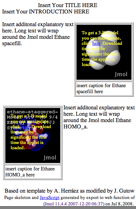

| Plantillas de página | Configuración |
| >
Pop-In >>Descripción >>Aspecto de la página >>Paso a paso > ScriptButton |
> Ruta a Jmol > Jmol en el servidor > Pruebas locales (sin servidor) |
La plantilla “Pop-In”
Esta pestaña se ha diseñado para preparar una página web que muestra una o varias imágenes de moléculas en Jmol, cada una de las cuales se convierte en un modelo interactivo Jmol cuando el usuario lo solicite. De este modo, la página se carga con más rapidez inicialmente. Cada imagen corresponde al aspecto inicial del modelo en Jmol que, a su vez, se define configurando a voluntad cada una de las miniaplicaciones Jmol. Puedes añadir el texto de la página más tarde usando el editor web que prefieras. Este panel se puede abrir una vez y regresar a él en cualquier momento.
A continuación se muestra una imagen de ejemplo de una página creada con esta plantilla:

1) Define la ruta a la miniaplicación Jmol en el sitio web, relativa a donde vayas a poner la página creada por este programa. (más...)
2) Pon tu nombre en el espacio dedicado al autor. De este modo, quedará añadido en los metadatos de la página, utilizados por los buscadores.
3) Añade el título que desees para el título de la ventana del navegador. (No tiene necesariamente que coincidir con el título que aparece dentro de la página.)
4) Si no lo has hecho ya, abre el primer archivo de molécula que quieras mostrar en la página, utilizando el menú “Archivo > Abrir” de la aplicación Jmol. Si vas a mostrar varios modelos en la página, abre sus archivos de uno en uno y sigue las etapas 5 a 7 para cada uno. (Únicamente si pretendes mostrar simultáneamente varios modelos necesitarás usar "load append" o la casilla “añadir modelos”.)
5) Ajusta el estado del modelo (tamaño, orientación, selección, colores, añade orbitales, ajusta la rotación, etc.) exactamente como quieras que se vea en la página web.
6) Indica las dimensiones que ha de tener la miniaplicación Jmol. No es preciso cambiar el tamaño de la ventana de la aplicación.
7) Pulsa en el botón “Añadir una vista con el estado actual de Jmol” y elige un nombre para esta vista.
8) Repite para cada vista que desees incluir. Debido a las limitaciones de memoria en el navegador web, es recomendable no incluir demasiadas miniaplicaciones Jmol en una página. Este problema será más severo cuanto más grande sea el tamaño de las miniaplicaciones. Sin embargo, puedes crear una página con muchas vistas y más tarde subdividirla en varias páginas.
9) Cuando hayas acabado, pulsa en el botón “Guardar HTML como...”. Proporciona el nombre para una nueva carpeta que contendrá esta página, o bien el nombre de un archivo HTML que quieras crear o sustituir (con extensión .htm o .html). Todos los archivos necesarios para la página se crearán en esa misma carpeta; esto incluye la propia página HTML, el archivo JavaScript “JmolPopin.js” y tres archivos por cada vista: uno con los datos de la molécula, un guión para Jmol y una imagen en formato png. Si indicaste una nueva carpeta, el archivo HTML se creará en esa carpeta y tendrá el mismo nombre que ésta, seguido de “.html”.
10) Abre el archivo HTML en un editor de páginas web y añade el texto explicativo y cualquier otro contenido que desees para la página. Ten la precaución de no alterar el contenido de las tablas en las que se mostrará Jmol; podrás así modificar la página tanto como quieras sin afectar al código JavaScript necesario para controlar el comportamiento de Jmol.